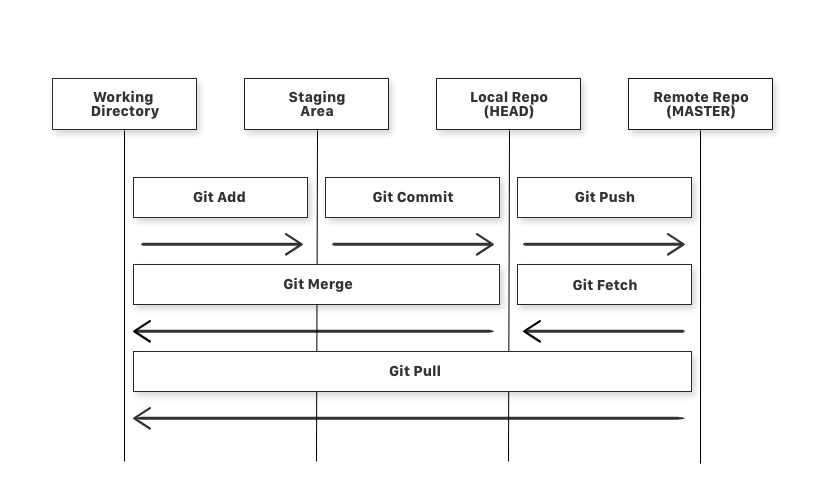

Version Control
What is Git?
Git is a version-control system for tracking changes in computer files and coordinating work on those files among multiple people. Git is a Distributed Version Control System.
A Version Control System (VCS) allows you to revert files back to a previous state, revert the entire project back to a previous state, review changes made over time, see who last modified something that might be causing a problem, who introduced an issue and when, and more. Using a VCS also means that if you screw things up or lose files, you can generally recover easily.
There are four fundamental elements in the Git Workflow.
Working Directory, Staging Area, Local Repository and Remote Repository.
Diagram of a Simple Git Workflow

Diagram of a Simple Git Workflow
git add is a command used to add a file that is in the working directory to the staging area.
git commit is a command used to add all files that are staged to the local repository.
git push is a command used to add all committed files in the local repository to the remote repository. So in the remote repository, all files and changes will be visible to anyone with access to the remote repository.
git fetch is a command used to get files from the remote repository to the local repository but not into the working directory.
git merge is a command used to get the files from the local repository into the working directory.
git pull is command used to get files from the remote repository directly into the working directory. It is equivalent to a git fetch and a git merge .
Assignment 3
How to recover an error using git
Introduce yourself to git by mentioning your Git username and email address, since every Git commit will use this information to identify you as the author.
Use these commands to do so